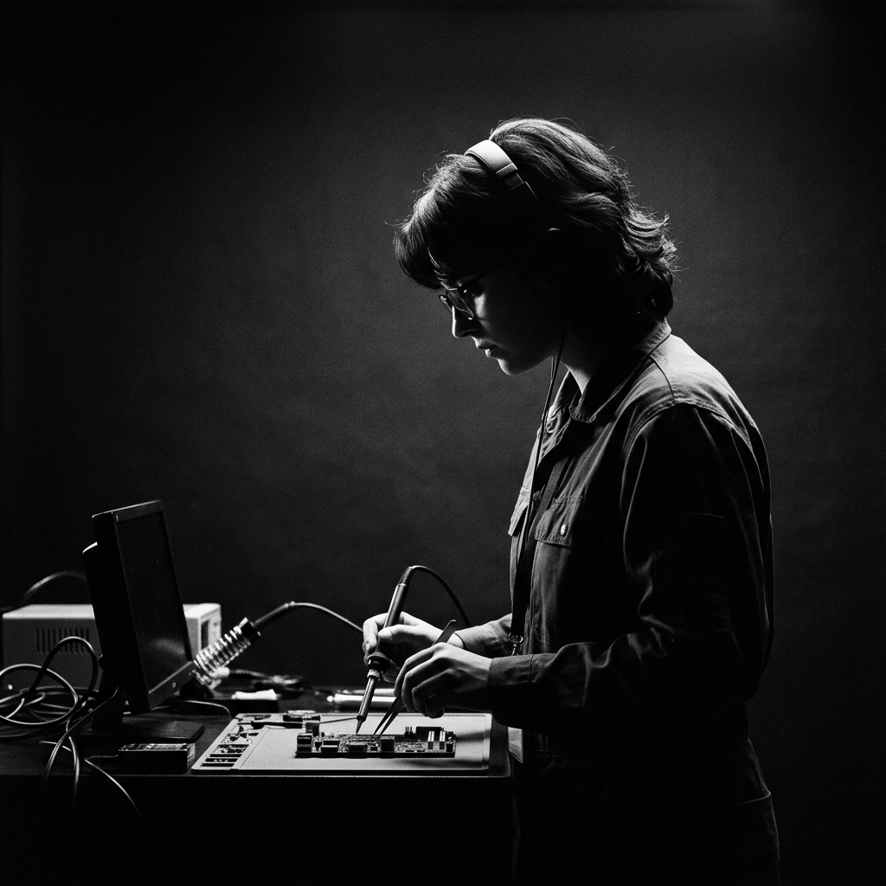

USE O SCROLL OU ARRASTE PARA GIRAR // CLIQUE PARA ENTRAR
LUCCAS DIAZZI
SIDE A // HARDWARE & SUPORTE
LD
PORTFÓLIO
DATA-909
REPO: GITHUB
CODE: DIAZZIEPEDRO
TYPE: REPOSITÓRIOS
CONTATO

ID: DIAZZI-L
Luccas Diazzi
Técnico de TI
Atualmente, curso o segundo ano de Tecnologia da Informação na rede Raphael Di Santo Garcia. Sou apaixonado por equipamentos e tenho grande interesse em seguir carreira na área de hardware e manutenção. Busco uma oportunidade como técnico de equipamentos para desenvolver minhas habilidades, adquirir experiência prática e contribuir com a resolução de problemas técnicos.
HARDWAREMANUTENÇÃO PREVENTIVAMONTAGEM E REPARODIAGNÓSTICO TÉCNICOREDES BÁSICAS